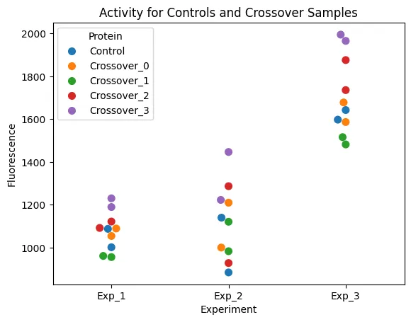
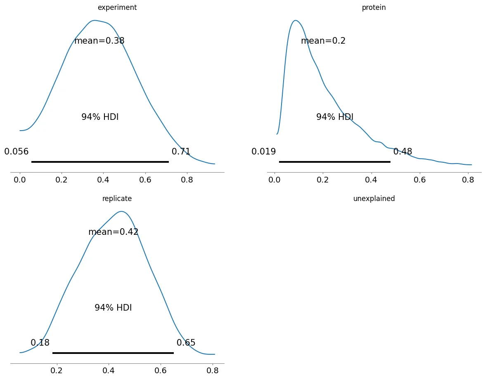
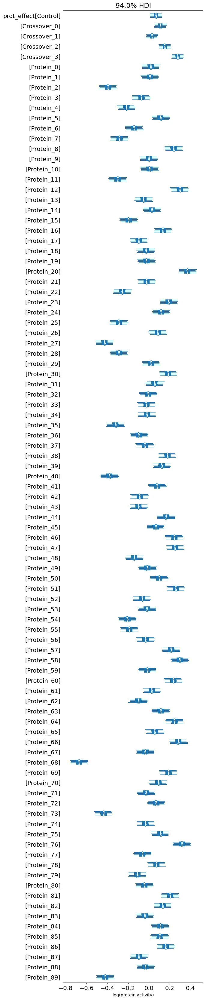
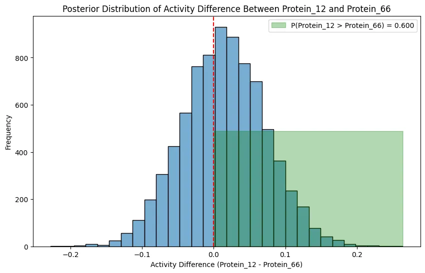
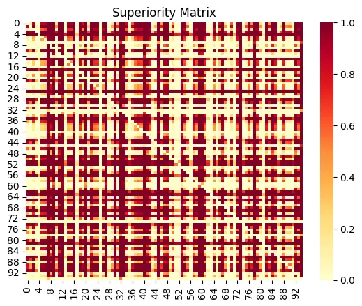
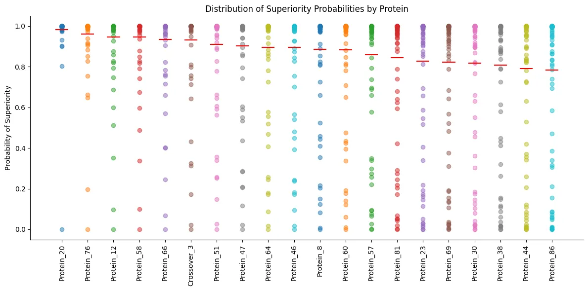
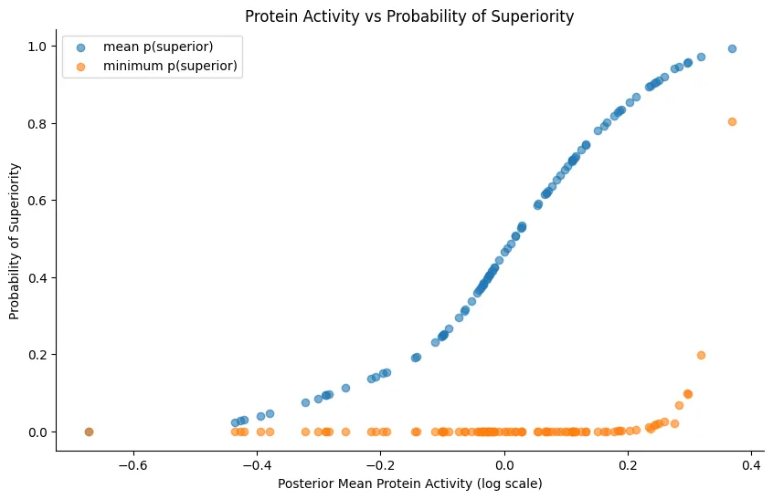

Eric J Ma's Website
written by Eric J. Ma on 2025-04-03 | tags: bayesian r2d2 variance modelling fluorescence experimental design probability of superiority probabilistic modelling data science statistics
In this blog post, I explore how to tackle experimental noise and candidate ranking in protein screening using Bayesian methods. By employing R2D2 priors, we can decompose variance into interpretable components, helping us understand the true biological signal versus experimental artifacts. Additionally, Bayesian superiority calculation allows us to quantify the probability that one protein outperforms another, providing a more robust comparison than traditional methods. These techniques are not only applicable to protein screening but also to drug discovery, materials science, and more. Are you ready to enhance your experimental insights with Bayesian logic?
Recently, I've been thinking and writing a lot about statistics. It's because good statistical practice is both under-rated, under-taught, and under-valued amongst machine learning practitioners and laboratory scientists, and yet it underpins the ability of machine learning practitioners in life sciences to build high performing machine learning models that accelerate decisions in the lab. It also enables laboratory scientists to design experiments that yield interpretable, and actionable results.
My prior experience doing the full spectrum of laboratory and computational science is one of the reasons why it pains me to see potentially good data go to waste due to poor experimental design and statistical analysis. Without good statistical practice underlying the data generating process -- and by that I mean good experimental design, and explicit quantification of uncertainty -- all ML models become equal: equally bad.
In this blog post, I want to show you how to use Bayesian methods to tackle two critical questions:
- Is our experimental setup actually measuring the effect we care about (vs. experimental noise)?
- Which candidates are truly superior to others?
As always, I go back to my favorite example: screening proteins. But as you read, note the generalities: they aren't specific to protein screening at all!
Note: The original
marimonotebook can be found here. If there are discrepancies between my blog post and the original marimo notebook, I note that the original notebook is correct. To run it, download it, and then execute:uvx marimo edit --sandbox https://ericmjl.github.io/blog/2025/4/3/bayesian-superiority-estimation-with-r2d2-priors-a-practical-guide-for-protein-screening/protein_estimation.py
When screening hundreds of molecules, proteins, or interventions, two critical questions often arise:
- Is our experimental setup actually measuring the effect we care about (vs. experimental noise)?
- Which candidates are truly superior to others?
In this tutorial, we'll tackle both challenges using a practical example: a protein screening experiment with fluorescence readouts. We'll show how R2D2 priors help interpret variance decomposition, and how Bayesian superiority calculation enables robust ranking of candidates. Both techniques generalize to drug discovery, material science, or any domain requiring rigorous comparison of multiple alternatives.
import pymc as pm
The Protein Screening Example
We'll use a dataset with fluorescence measurements for over 100 proteins across multiple experiments and replicates, with an experimental design that includes:
- A control protein present in all experiments and replicates
- "Crossover" proteins measured across all experiments
- Unique test proteins in each experiment
This design is common in high-throughput screening where measuring all proteins in all conditions is impractical. We'll implement our analysis using PyMC, a powerful probabilistic programming framework for Bayesian modeling.
Generating Synthetic Data
To demonstrate our approach, we'll generate synthetic data that mimics a realistic protein screening experiment with:
- 3 experiments with 2 replicates each
- A control protein and crossover proteins present in all experiments
- Test proteins unique to each experiment
- Systematic experiment effects (batch effects)
- Replicate-level variation
- Measurement noise
import numpy as np import pandas as pd # Set random seed for reproducibility np.random.seed(42) # Define parameters n_experiments = 3 n_replicates = 2 n_proteins_per_exp = 40 n_crossover = 4 # Create protein names control = ["Control"] crossover_proteins = [f"Crossover_{i}" for i in range(n_crossover)] other_proteins = [f"Protein_{i}" for i in range(100)] # Base fluorescence values base_values = {} base_values["Control"] = 1000 for p in crossover_proteins: base_values[p] = np.random.normal(1000, 200) for p in other_proteins: base_values[p] = np.random.normal(1000, 200) # Create experiment effects exp_effects = np.random.normal(1, 0.3, n_experiments) rep_effects = np.random.normal(1, 0.1, (n_experiments, n_replicates)) # Generate data data = [] for exp in range(n_experiments): # Select proteins for this experiment exp_proteins = ( control + crossover_proteins + other_proteins[exp * 30 : (exp + 1) * 30] ) for rep in range(n_replicates): for protein in exp_proteins: # Add noise and effects value = ( base_values[protein] * exp_effects[exp] * rep_effects[exp, rep] * np.random.normal(1, 0.05) ) data.append( { "Experiment": f"Exp_{exp+1}", "Replicate": f"Rep_{rep+1}", "Protein": protein, "Fluorescence": value, } ) # Convert to DataFrame df = pd.DataFrame(data) df
| Experiment | Replicate | Protein | Fluorescence | |
|---|---|---|---|---|
| 0 | Exp_1 | Rep_1 | Control | 1087.476281 |
| 1 | Exp_1 | Rep_1 | Crossover_0 | 1054.176224 |
| 2 | Exp_1 | Rep_1 | Crossover_1 | 955.647739 |
| 3 | Exp_1 | Rep_1 | Crossover_2 | 1091.751188 |
| 4 | Exp_1 | Rep_1 | Crossover_3 | 1189.344109 |
| ... | ... | ... | ... | ... |
| 205 | Exp_3 | Rep_2 | Protein_85 | 1765.149428 |
| 206 | Exp_3 | Rep_2 | Protein_86 | 1595.422298 |
| 207 | Exp_3 | Rep_2 | Protein_87 | 1889.585595 |
| 208 | Exp_3 | Rep_2 | Protein_88 | 1394.395041 |
| 209 | Exp_3 | Rep_2 | Protein_89 | 1411.831297 |
210 rows × 4 columns
In the synthetic dataset we've created, we simulated:
- 3 experiments with 2 replicates each
- A control protein and 4 crossover proteins present in all experiments
- 100 other proteins distributed across experiments
- Multiplicative experiment effects (mean=1, sd=0.3)
- Multiplicative replicate effects (mean=1, sd=0.1)
- Multiplicative measurement noise (mean=1, sd=0.05)
This structure simulates a typical screening setup where batch effects between experiments are stronger than replicate variation, and both contribute significantly to the observed fluorescence values. The setting mirrors real experimental challenges where we need to separate biological signal from technical noise.
Examining the Raw Data
Before modeling, let's visualize the control and crossover proteins to understand experimental variation:
import matplotlib.pyplot as plt import seaborn as sns # Filter for Control and Crossover samples mask = df["Protein"].str.contains("Control|Crossover") filtered_df = df[mask] # Create the swarm plot sns.swarmplot( data=filtered_df, x="Experiment", y="Fluorescence", hue="Protein", size=8 ) plt.title("Activity for Controls and Crossover Samples") plt.ylabel("Fluorescence") plt.gca()

Notice the dramatic shift in fluorescence values across experiments. Experiment 3 shows substantially higher fluorescence readings (around 1500-2000 units) compared to Experiments 1 and 2 (mostly below 1300 units).
This pattern illustrates a common challenge in high-throughput screening: significant batch effects between experiments that can mask the true biological signal. Without accounting for these experimental factors, we might incorrectly attribute higher activity to proteins simply because they were measured in Experiment 3.
Our modeling approach needs to account for both between-experiment and within-experiment sources of variation to accurately compare proteins across the entire dataset.
The R2D2 Prior for Variance Decomposition
The R2D2 prior (R-squared Dirichlet decomposition) provides an interpretable framework for variance decomposition by placing a prior on the Bayesian coefficient of determination ($R^2$), which then induces priors on individual parameters.
The core idea is simple but powerful:
- Place a $\text{Beta}(a,b)$ prior on $R^2$ (the proportion of variance explained by the model)
- Induce a prior on the global variance parameter representing total variance
- Decompose the global variance into components via a Dirichlet distribution
This approach has key advantages over traditional hierarchical models:
- Instead of specifying arbitrary priors for each variance component separately, we control total explained variance through a single interpretable parameter ($R^2$)
- The variance partition becomes meaningful through the Dirichlet distribution
- The hierarchical nature ensures regularization of variance estimates
Here's our implementation of the model:
def _(): # create categorical indices exp_idx = pd.Categorical(df["Experiment"]).codes rep_idx = pd.Categorical(df["Replicate"]).codes prot_idx = pd.Categorical(df["Protein"]).codes # define coords for dimensions coords = { "experiment": df["Experiment"].unique(), "replicate": df["Replicate"].unique(), "protein": df["Protein"].unique(), "component": ["experiment", "replicate", "protein"], } with pm.Model(coords=coords) as model: # 1. residual variance (σ²) stands alone sigma_squared = pm.HalfNormal("sigma_squared", sigma=1) residual_sd = pm.Deterministic("residual_sd", pm.math.sqrt(sigma_squared)) # 2. R² prior and induced total signal variance W r_squared = pm.Beta("r_squared", alpha=1, beta=1) W = pm.Deterministic( "W", sigma_squared * r_squared / (1 - r_squared) ) # 3. split W among the three signal components props = pm.Dirichlet("props", a=np.ones(3), dims="component") exp_var, rep_var, prot_var = props * W # component standard deviations exp_sd = pm.Deterministic("exp_sd", pm.math.sqrt(exp_var)) rep_sd = pm.Deterministic("rep_sd", pm.math.sqrt(rep_var)) prot_sd = pm.Deterministic("prot_sd", pm.math.sqrt(prot_var)) # 4. group effects exp_effect = pm.Normal("exp_effect", mu=0, sigma=exp_sd, dims="experiment") rep_effect = pm.Normal( "rep_effect", mu=0, sigma=rep_sd, dims=("experiment", "replicate") ) prot_effect = pm.Normal("prot_effect", mu=0, sigma=prot_sd, dims="protein") # global mean on log scale global_mean = pm.Normal("global_mean", mu=7, sigma=1) # expected value for each observation y_hat = ( global_mean + exp_effect[exp_idx] + rep_effect[exp_idx, rep_idx] + prot_effect[prot_idx] ) # optional: compute implied model R² for checking model_r2 = pm.Deterministic( "model_r2", (exp_var + rep_var + prot_var) / (exp_var + rep_var + prot_var + sigma_squared), ) # 5. likelihood uses only the residual_sd y = pm.Normal( "y", mu=y_hat, sigma=residual_sd, observed=np.log(df["Fluorescence"]), ) # sample trace = pm.sample(2000, tune=1000, return_inferencedata=True, nuts_sampler="nutpie") return model, trace model, trace = _()
Model Convergence and Variance Analysis
After fitting our model, zero divergent transitions confirm good convergence.
Let's examine how variance is partitioned across components:
trace.sample_stats.diverging.sum()
<xarray.DataArray 'diverging' ()> Size: 8B array(0)
In the ridgeline plot below, we see that unexplained variance contributes minimally to total variation, while experiment and replicate effects—which ideally should contribute little—are actually significant contributors to the readout variation. This serves as a metric of laboratory consistency.
Ideally, the protein variation (our biological signal of interest) should be the dominant source of variation. This analysis suggests that improving experimental protocols to reduce batch effects would substantially improve our signal-to-noise ratio.
import arviz as az axes_posterior_props = az.plot_posterior(trace, var_names=["props"], grid=(2, 2)) axes_posterior_props.flatten()[0].set_title("experiment") axes_posterior_props.flatten()[2].set_title("replicate") axes_posterior_props.flatten()[1].set_title("protein") axes_posterior_props.flatten()[3].set_title("unexplained")

These posterior plots show the distributions of the variance components. Each represents the proportion of total variance attributed to that component. We can see clear differences in the contributions from each source.
We can also look at the total $R^2$ value, which represents the proportion of variance explained by the model:
az.plot_posterior(trace, var_names=["model_r2", "r_squared"])
Axes(0.125,0.110;0.352x0.770) Axes(0.548,0.110;0.352x0.770)
![]()
Taken together, we can interpret that the model fits the data very well (model_r2 close to 1), but it is concerning to me that protein only explains 19% of the variation in readout, while experiment and replicate explains more than 70% of the output variation, which signals to me that the measurements are not particularly tight, and a lot could be done to control experiment-to-experiment variation. Additionally, the fact that our model_r2 and r_squared parameters are self-consistent is reassuring as well.
Protein Activity Estimates
Now that we've decomposed the variance and accounted for experimental effects, let's examine the protein activity estimates—the "true" biological signal after removing experimental noise:
ax = az.plot_forest(trace.posterior["prot_effect"])[0] ax.set_xlabel("log(protein activity)")

The forest plot displays posterior distributions of protein activity (log scale), with horizontal lines representing 94% credible intervals.
A key challenge emerges: despite similar uncertainty across proteins, overlapping credible intervals make it difficult to determine which proteins are truly superior. Simply ranking by posterior means could lead us to prioritize proteins with slightly higher point estimates when uncertainty makes their actual superiority ambiguous.
This is a fundamental limitation of ranking by point estimates alone: it fails to properly account for uncertainty. A protein with a slightly lower mean but narrower credible intervals might be a better candidate than one with a higher mean but wider uncertainty bounds.
Why not calculate the effect sizes?
While effect sizes quantify difference magnitudes, they have important limitations:
- They still have posterior distributions with uncertainty
- They require an arbitrary reference protein
- Scale interpretation is subjective
- They don't directly answer "which is better?"
This is where the probability of superiority calculation shines: it integrates over the entire posterior distribution to directly answer our key question: "What is the probability that protein A is better than protein B?"
The probability of superiority:
- For each posterior sample, compares protein A's activity to protein B's
- Counts the proportion of samples where A > B
- Results in P(A > B) - a single number from 0 to 1
This approach integrates over uncertainty, directly answers our question, avoids arbitrary references, and produces an intuitive metric for decision-making.
Let's illustrate this with a comparison between two specific proteins:
def _(): # Get posterior samples prot_activity = trace.posterior["prot_effect"].values prot_activity_flat = prot_activity.reshape(-1, prot_activity.shape[2]) # Get protein names protein_names = trace.posterior["protein"].values # Choose two proteins to compare protein1 = "Protein_12" # A high performer protein2 = "Protein_66" # Another high performer idx1 = np.where(protein_names == protein1)[0][0] idx2 = np.where(protein_names == protein2)[0][0] # Extract their posterior samples samples1 = prot_activity_flat[:, idx1] samples2 = prot_activity_flat[:, idx2] # Calculate differences for each posterior sample differences = samples1 - samples2 # Calculate superiority probability prob_superiority = np.mean(differences > 0) # Plot the posterior of differences plt.figure(figsize=(10, 6)) # Histogram of differences sns.histplot(differences, bins=30, alpha=0.6) # Add vertical line at zero plt.axvline(x=0, color="r", linestyle="--") # Shade the area where protein1 > protein2 positive_mask = differences > 0 plt.fill_between( np.sort(differences[positive_mask]), 0, plt.gca().get_ylim()[1] / 2, # Half height for visibility alpha=0.3, color="green", label=f"P({protein1} > {protein2}) = {prob_superiority:.3f}", ) plt.xlabel(f"Activity Difference ({protein1} - {protein2})") plt.ylabel("Frequency") plt.title( "Posterior Distribution of Activity Difference " f"Between {protein1} and {protein2}" ) return plt.legend() _()

This visualization demonstrates the core concept. The green shaded area represents the proportion of posterior samples where the first protein outperforms the second. This proportion is the probability of superiority.
Rather than reducing our rich posterior distributions to point estimates or effect sizes that still require interpretation, the superiority probability directly integrates over all uncertainty to answer our precise question: "How likely is it that this protein is better than that one?"
Now let's calculate this for all pairs of proteins to create a comprehensive superiority matrix:
from tqdm.auto import tqdm def _(): n_proteins = trace.posterior["prot_effect"].shape[-1] prot_activity = trace.posterior["prot_effect"].values.reshape(-1, n_proteins) superiority_matrix = np.zeros((n_proteins, n_proteins)) for i in tqdm(range(n_proteins)): for j in range(n_proteins): if i != j: superiority_matrix[i, j] = np.mean( prot_activity[:, i] > prot_activity[:, j] ) return superiority_matrix superiority_matrix = _()
This superiority matrix gives us, for each pair of proteins (i, j), the probability that protein i has higher activity than protein j, incorporating all model uncertainty.
The calculation yields a probability interpretation: "There's an 85% chance that protein A is superior to protein B" rather than the frequentist "protein A is significantly better than protein B with p<0.05."
Let's visualize this matrix:
# Create heatmap sns.heatmap(superiority_matrix, annot=False, cmap="YlOrRd", fmt=".2f") plt.title("Superiority Matrix") plt.gca()

We can rank proteins by their average probability of superiority across all comparisons:
def _(): # Calculate average probability of superiority and sort proteins avg_superiority = superiority_matrix.mean(axis=1) protein_names = df["Protein"].unique() superiority_df = pd.DataFrame( {"Protein": protein_names, "Avg_Superiority": avg_superiority} ) sorted_superiority = superiority_df.sort_values( "Avg_Superiority", ascending=False ).head(20) # Create plot plt.figure(figsize=(12, 6)) # For each protein, plot individual points and mean line for i, protein in enumerate(sorted_superiority["Protein"]): protein_idx = np.where(protein_names == protein)[0][0] protein_probs = superiority_matrix[protein_idx] plt.scatter([i] * len(protein_probs), protein_probs, alpha=0.5) plt.hlines(avg_superiority[protein_idx], i - 0.25, i + 0.25, color="red") plt.xticks( range(len(sorted_superiority)), sorted_superiority["Protein"], rotation=90 ) plt.ylabel("Probability of Superiority") plt.title("Distribution of Superiority Probabilities by Protein") plt.tight_layout() sns.despine() return plt.gca() _()

This ranking differs from what we might conclude by examining forest plots alone. The superiority metric directly quantifies the probability that one protein outperforms others, properly accounting for the full posterior distribution and uncertainty in each comparison.
To better understand how protein activity relates to superiority probability, let's compare their posterior mean activity with two superiority measures:
def _(): # Calculate probability of superiority distribution for each protein superiority_dist = [ np.concatenate([superiority_matrix[i, :j], superiority_matrix[i, j + 1 :]]) for i, j in enumerate(range(len(superiority_matrix))) ] # Get protein activity statistics from trace protein_activity_mean = ( trace.posterior["prot_effect"].mean(dim=["chain", "draw"]).values ) # Create scatter plot plt.figure(figsize=(10, 6)) # Plot points plt.scatter( protein_activity_mean, [np.mean(dist) for dist in superiority_dist], alpha=0.6, label="mean p(superior)", ) plt.scatter( protein_activity_mean, [np.percentile(dist, q=0) for dist in superiority_dist], alpha=0.6, label="minimum p(superior)", ) plt.xlabel("Posterior Mean Protein Activity (log scale)") plt.ylabel("Probability of Superiority") plt.legend() plt.title("Protein Activity vs Probability of Superiority") sns.despine() return plt.gca() _()

This plot reveals that:
- The relationship between activity and superiority is non-linear
- Proteins with similar activities can have different superiority probabilities depending on the certainty of their estimates
- The minimum probability of superiority provides a conservative decision-making measure—a protein with high minimum superiority is more likely to be the superior candidate
Conclusion
When screening candidates, two questions are critical: "Are we measuring what matters?" and "Which candidates are truly superior?" Traditional approaches using point estimates and p-values inadequately address these questions when dealing with experimental noise and multiple comparisons.
A Bayesian model with explicitly modeled terms offers a powerful alternative:
R2D2 priors decompose variance into interpretable components, revealing how much signal comes from the biological effect versus experimental artifacts. This guides concrete improvements to experimental protocols.
Bayesian superiority calculation directly quantifies the probability that one candidate outperforms others, properly accounting for uncertainty and avoiding the pitfalls of simple rank ordering.
These techniques transform screening data into actionable insights and apply to any domain requiring robust comparison of multiple candidates under noisy conditions: drug discovery, materials science, A/B testing, clinical trials, and more.
Bayesian methods move us beyond simplistic "winners and losers" to a nuanced understanding of which candidates are most likely to succeed, with what degree of certainty, and how we can improve our measurement process itself.
And more meta-level: none of this needs fancy names. It's just logic and math, applied to data. Wasn't that what statistics was supposed to be?
With thanks to Jackie Valeri for sanity-checking the code while also learning the ins-and-outs of the R2D2 prior, and Virgile Andreani for first introducing me to the R2D2 prior!
Cite this blog post:
@article{
ericmjl-2025-bayesian-superiority-estimation-with-r2d2-priors-a-practical-guide-for-protein-screening,
author = {Eric J. Ma},
title = {Bayesian Superiority Estimation with R2D2 Priors: A Practical Guide for Protein Screening},
year = {2025},
month = {04},
day = {03},
howpublished = {\url{https://ericmjl.github.io}},
journal = {Eric J. Ma's Blog},
url = {https://ericmjl.github.io/blog/2025/4/3/bayesian-superiority-estimation-with-r2d2-priors-a-practical-guide-for-protein-screening},
}
I send out a newsletter with tips and tools for data scientists. Come check it out at Substack.
If you would like to sponsor the coffee that goes into making my posts, please consider GitHub Sponsors!
Finally, I do free 30-minute GenAI strategy calls for teams that are looking to leverage GenAI for maximum impact. Consider booking a call on Calendly if you're interested!